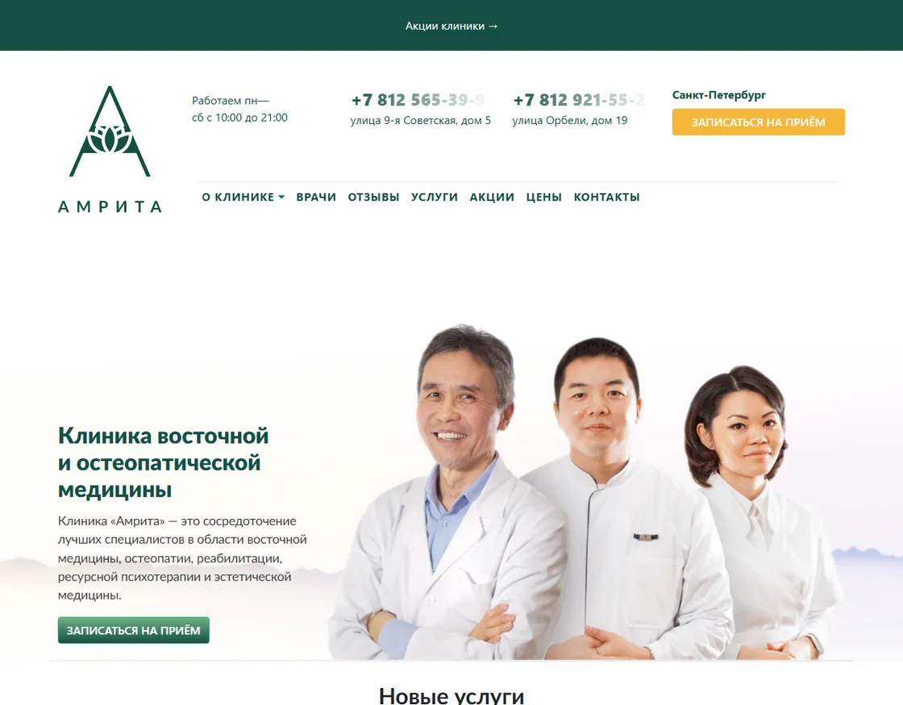
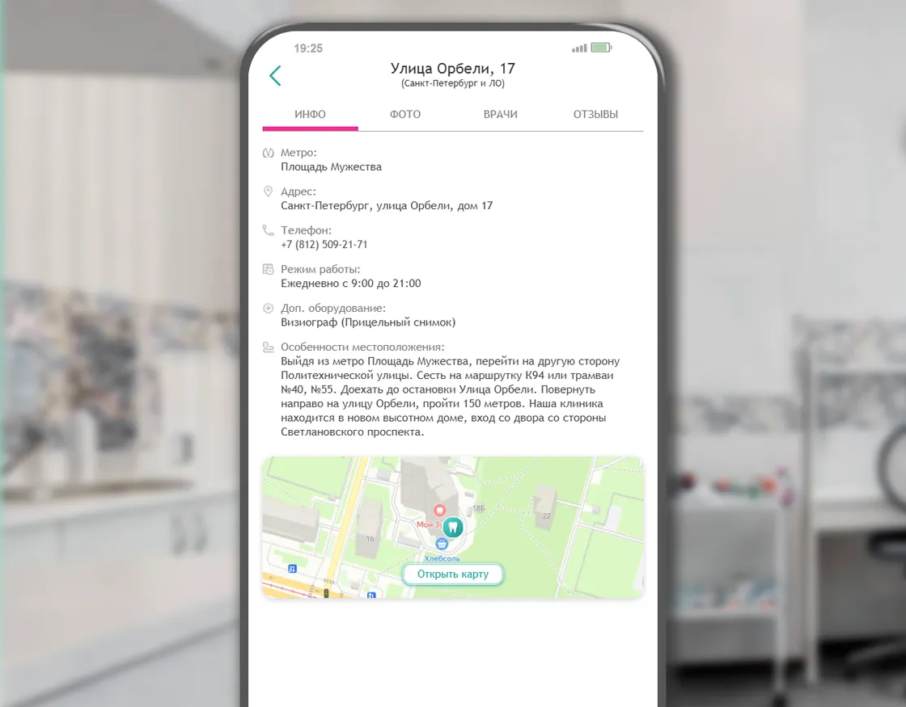

Всё подорожало разом
Материалы +15–50%, зарплаты врачей +10–15% в год, отменили льготные взносы, в цену заложен НДС 22%. Выручка не выросла.
Никто не будет звонить без спроса · читать 4 минуты
Материалы +15–50%, зарплаты врачей +10–15% в год, отменили льготные взносы, в цену заложен НДС 22%. Выручка не выросла.
Прайс подняли меньше, чем выросли расходы, а регистратура всё чаще слышит «у соседей дешевле».
Сарафан ослаб. Имплантацию, протезы и брекеты переносят «до лучших времён».
Человек сравнивает 5–10 клиник и уходит туда, где понятнее, за что платить.
Меньше заработали — нечем привлекать, привлечение подорожало вдвое — снова скидка.
Из пяти соседей идут не к лучшему, а к тому, кто понятнее показал себя ещё до звонка.
Врачи, метод, гарантии и состав суммы видны заранее — поднятый прайс не пугает.
У каждого из 14 направлений своя страница с теми словами, которые люди набирают.
Поток включают, когда в расписании дыра, и гасят, когда плотно. Скидка — больше не единственный рычаг.
Отзывы, врачи, случаи и лицензии — на своём адресе, а не на чужих площадках. Навсегда.
Слева — где вы сейчас. Справа — где окажетесь, когда у клиники появится своя страница.
По запросу «уролог площадь мужества» открываются чужие каталоги, где вы рядом с девятью конкурентами.
У каждой услуги своя страница с нужными словами. В выдаче вы сами, без соседей рядом.
Карточку открывают 420 человек в месяц, а звонить готовы двое из десяти.
Форма на каждой странице, заявка приходит в WhatsApp регистратуры — даже ночью.
Сколько стоит приём и кто принимает — только по телефону. Выбирают того, у кого цена написана.
Прайс открыт, у каждого врача карточка с опытом. Разговоров «просто узнать» меньше.
Яндекс Директ требует страницу с услугой и ценой. Без неё канал закрыт целиком.
У каждой услуги посадочная: поток включается в нужный день и гасится, когда расписание полное.
На площадке выбирают по звёздам и цене — не глядя, что вы работаете двадцать четыре года.
На своей странице нет ни одного конкурента. Сравнивают не с соседом, а с тем, за чем пришли.
У соседки 196 оценок, у вас 28 — отзыв оставляет тот, кто смог записаться.
Отзывы, врачи, лицензии и случаи — на одной странице, без соседских рядом.
После 20:00 и в выходные никто не отвечает — человек уходит к следующей клинике.
Ночью и в праздники страница отвечает и записывает. Утром — список заявок.
Часть людей смотрит документы до записи. В справочнике номера лицензии нет.
Отдельная страница с лицензией и допусками врачей. Проверяют у вас — и остаются.
«Сколько стоит», «кто в субботу», «как доехать» — весь день одно и то же.
Прайс, подготовка к анализам, часы и проезд отвечают сами. Разговоры короче.
Цифры собраны по вашим карточкам вручную и взяты по нижней границе. Ниже их можно пересчитать по своим — оценка получается заметно крупнее.
Яндекс Карты, 2ГИС и медицинские порталы приводят к вам 420 человек в месяц — уходить оттуда не нужно. Но площадка зарабатывает на вас: продаёт место в списке и берёт процент с записи.
3 000–30 000 ₽ в месяц за приоритет. Перестали — карточка уходит вниз.
Портал берёт 3,7% — даже когда пациент пришёл второй раз.
Позвать его на осмотр через полгода вы не сможете.
Площадка показывает их прямо в вашей карточке.
Какие отзывы показать и кого поднять выше, решает её алгоритм.
Домен и хостинг — несколько тысяч ₽ в год. Снять с показа не может никто.
0 ₽ с первой, сотой и повторной заявки.
Имя, телефон и услуга приходят вам. Через полгода пригласите на осмотр.
Ни чужих клиник, ни чужой рекламы. Выбирают между вашими врачами.
Врачи, цены, отзывы, акции — решаете сами. Сменится подрядчик — сайт останется.
Тарифы — из открытых прайсов площадок, сентябрь 2026. Бросать справочники не нужно: сайт нужен, чтобы пациент, которого они привели, остался вашим.
Вслух не нужно, мне — тоже. Если хотя бы на один ответа нет, он уже стоит вам денег.
Откройте вопрос и отметьте честно: есть ответ или нет.
Без своей страницы этот поток не виден нигде: Метрики нет, считать нечего. Сайт превращает его из догадки в цифру.
Сегодня — нигде. А выбирают того, у кого цена написана, а не того, кто лечит лучше.
На площадке — её алгоритм и тот, кто заплатил за приоритет. На своём адресе — только вы.
Директу нужна страница с услугой и ценой. Без неё канал закрыт, сколько бы вы ни были готовы вложить.
Регистратура закрыта с 20:00. Человек открывает следующую клинику — и вы об этом не узнаете.
Сейчас — на четырёх чужих площадках вперемешку с соседями. Целиком их не видно нигде.
Ни один из шести вопросов не про качество лечения. Все шесть — про то, что человек может узнать о клинике до того, как впервые вам позвонил.
Это проверка на совпадение: узнали свою клинику хотя бы в одном пункте — расчёт ниже уже про вас.
Сайт не лечит и не нанимает — он приводит людей. Шестнадцать записей в месяц первыми заполняют пустые часы.
Пустое окно уже оплачено арендой и зарплатой.
Каталог берёт помесячно за строчку и процент с каждой записи. Заявка со своей страницы не стоит ничего.
За место платят каждый месяц, страницу покупают один раз.
Яндекс Директ требует страницу с услугой и ценой — без неё канал закрыт. Со страницей поток включается в тот день, когда он нужен.
Реклама без посадочной — деньги в чужой каталог.
В справочнике клиника — одна строка на все услуги: кто ищет уролога, видит стоматологию и уходит. Каждому направлению нужна своя страница.
Чем шире клиника, тем дороже ей одна строчка в чужом списке.
А если окон в расписании нет и потока из справочников хватает — сайт подождёт. Я скажу это прямо, не дожидаясь вашего вопроса.
Один сосед сидит в вашем доме, второй — в соседнем. Снимки их сайтов сделаны 13 сентября в окне 1280 пикселей: так эти страницы видит человек с ноутбука.
Исправить за 10 дней
4,9 · 196 оценок
5,0 · 139 оценокул. Орбели, 19 · 24 года работы · 14 направлений
Ни одна из их сильных сторон не про деньги и не про качество лечения. Всё это человек может сделать на их странице — и не может на вашей.
Первые пять дней работаю бесплатно и без договора. Остановиться можно между любыми двумя шагами.
01 · Дни 1–2 бесплатно
Сколько людей в вашем районе ищут ваши услуги — и куда они уходят сейчас.
02 · Дни 3–4 бесплатно
Собираю сам, из ваших карточек и регистратуры — от вас ничего не нужно.
03 · Дни 4–5 бесплатно
Не описание словами, а рабочая страница, которую можно открыть и пролистать.
04 · День 6 · 30 минут
Смотрите на конкретную страницу и говорите «да» или «нет».
05 · День 7
Всё оформляется на вашу компанию, а не на подрядчика.
06 · Дни 7–9
Вручную, без конструкторов и готовых тем.
07 · День 10
Сайт уходит в работу, и с первого дня видно, что он приносит.
08 · После приёмки
Последний документ, а не первый.
Поставьте свои значения — результат пересчитается сразу.
6% посетителей записываются со страницы с ценой и кнопкой
Сайт принесёт в первый месяц
+105 477 ₽
и столько же каждый следующий — 1 265 725 ₽ за год
Сегодня своя страница приносит 0 ₽
Пересчитать вместе на встречеВ расчёте обе дороги: те, кто уже открыл вашу карточку, и те, кто ищет услугу в поиске и находит вас сам. Вторых поставлено девять в месяц — это заведомо мало.
Точные цифры лежат в вашем кабинете Яндекс Бизнеса — откроем на встрече и пересчитаем при вас. Доля 72,6% переходов с карточки — данные Яндекса по Петербургу.
В агентстве страницу ведут менеджер, копирайтер, дизайнер и верстальщик. Здесь смыслы, тексты, дизайн и сборку делает тот же человек, с которым вы разговариваете — и за результат отвечает на сто процентов.
У агентства два десятка сайтов, и правку вы ждёте до планёрки. Я беру не больше двух проектов и третий не возьму, пока не сдам первый. Вы получаете внимание, а не остаток чужого времени.
В счёте агентства — аренда, аккаунт-менеджер, планёрки и премия отдела продаж. Здесь счёт состоит из работы и больше ни из чего.
Конструктор даёт подписку, чужое имя в адресе и лишние скрипты. Эта страница собрана вручную: нажмите Ctrl + U и посмотрите сами. Ваш сайт будет собран так же.
Ничего из этого не делает меня лучше агентства с отделом из восьми человек: у них мощность, подмена на время отпуска, юрист в штате. У меня — два проекта, и вашу страницу от первой мысли до последней строки кода держит в голове один человек.
Эту страницу вы только что пролистали. Так же будут листать и вашу — до кнопки «Записаться».
Забрать свой сайтНи одна строка справа не про новых врачей, оборудование или деньги в рекламу. Это та же клиника — просто её стало видно.
Бесплатно и без звонков. Договор, сроки и деньги обсуждаются только после того, как вы всё это увидите.
Макет, список страниц и разбор запросов — четыре-пять дней моей работы, отданных до договора и до первого рубля. Посмотрите и скажите «нет», если не подойдёт: это нормальный ответ.
Мне полагалось поставить сюда ещё один экран с кнопкой и словами «последний шанс». Вместо него — голосовое. Включите, это минута.
Максим, автор этого предложенияГолосовое загружается отдельно — если не играет, напишите в WhatsApp, пришлю сразу.